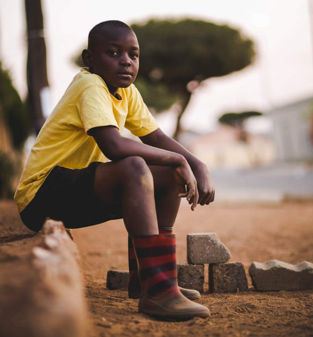
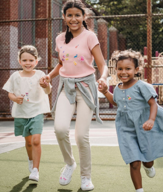

Sobre nós
Centro de cidadania negra do estado de Goiás
A entidade CENEG-Goiás - fundada em 2003 é uma instituição civil, sem fins lucrativos de caráter CULTURAL, AMBIENTAL, EDUCACIONAL E DE ASSISTÊNCIA SOCIAL, reconhecida com títulos de Utilidade Pública Federal, Estadual e Municipal.
Saiba mais